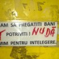

Entuziasmul l-a cuprins brusc, într-o dimineaţă. Cu ochii cârpiţi de somn a declamat propoziţia care îi bântuise visele şi îl înghiontise de la spate să-şi schimbe radical viaţa.
- Ţara asta are nevoie de cetăţeni responsabili!
- Ce? sare ca arsă nevastă-sa. A venit responsabilul de scară? Iar ai uitat să pui la cutie fişa cu apometrele? O să ne treacă la pauşal! Dacă ne trece la pauşal, să te văd de unde scoţi milioanele.
- Vezi? Tocmai ăsta-i cusurul meu. Mereu amân să-mi îndeplinesc datoriile cetăţeneşti şi din pricina persoanelor ca mine stă ţara-n loc.
Femeia îl priveşte buimacă, apoi se întoarce pe partea cealaltă şi adoarme la loc.
Proaspăt responsabilizat, cetăţeanul Popescu se aruncă jos din aşternut, se spală cu apă rece pe ochi (aia caldă oricum e oprită de două zile) şi deschide larg fereastra ca să-şi facă înviorarea de dimineaţă. O închide repede la loc pentru a stăvili duhoarea şi uruitul infernal ce se înalţă dinspre maşina de gunoi care îşi face alene treaba printre blocuri.
Fără datorii de azi
 În timp ce bea cafeaua, omul nostru pune la cale un plan de bătaie. Va începe cu plata facturilor restante în drum spre serviciu. Părăseşte domiciliul conjugal cu o jumătate de oră mai devreme şi se îndreaptă vesel către primul bancomat. E gata să-şi verse banii în buzunarele încăpătoare ale furnizorilor de servicii. Elanul responsabil îi este retezat însă de către nişte puşti iresponsabili care au vandalizat fără noimă aparatul pe timpul nopţii. Nu-i nimic, îşi spune cetăţeanul îndreptându-se, cu ceva mai puţină veselie, către prima bancă pe care o întâlneşte deschisă.
În timp ce bea cafeaua, omul nostru pune la cale un plan de bătaie. Va începe cu plata facturilor restante în drum spre serviciu. Părăseşte domiciliul conjugal cu o jumătate de oră mai devreme şi se îndreaptă vesel către primul bancomat. E gata să-şi verse banii în buzunarele încăpătoare ale furnizorilor de servicii. Elanul responsabil îi este retezat însă de către nişte puşti iresponsabili care au vandalizat fără noimă aparatul pe timpul nopţii. Nu-i nimic, îşi spune cetăţeanul îndreptându-se, cu ceva mai puţină veselie, către prima bancă pe care o întâlneşte deschisă.
Politica băncii, roboţelul, buletinul şi pauza
- Nu primim facturi, îl anunţă sec domnişoara frumos coafată de la ghişeu. Îmi pare rău, asta e politica băncii. Încercaţi alături.
Alături, o altă domnişoară, la fel de frumos coafată, îi intuieşte intenţiile de cum îl vede păşind pe uşă.
- Facturile se plătesc numai la roboţel.
Nedumerit, bărbatul îl caută din priviri pe Wall•e. E singura reprezentare robotică pe care o are în minte. Într-un târziu, dă cu ochii de un aparat în formă de om care înghite bani, dar care anunţă prin intermediul unui afiş scris cu litere de-o şchioapă că nu regurgitează şi rest.
- Nu pot, că am la mine doar o hârtie de 200 de lei şi mai multe facturi mici.
- Îmi pare rău, asta e politica băncii. Nu mai primim facturi la ghişeu. Se face coadă.
- Păi … nu mai e nimeni aici!
- Acum nu, dar până vă servesc pe dumneavoastră e posibil să se formeze o coadă.
Deloc vesel, Popescu părăseşte şi a doua bancă, îndreptându-se vlăguit către a treia.
- Facturi primiţi?
- Da, sigur. Daţi-mi buletinul.
- Nu-l am la mine.
- Îmi pare rău, fără buletin nu se poate.
- Bine, însă factura are cod de bare. Vreau să dau bani, nu să fac vreun credit. Am bani, am factura, am bune intenţii. De ce nu-mi luaţi banii?
- Îmi pare rău, asta e politica băncii.
I-ar spune el vreo două vorbe despre politica lui, dar se grăbeşte prea tare. Cu ultimele puteri sprintează către sediul poştei. Cu un ochi la ceas şi cu altul la telefonul mobil pe care şeful l-ar putea suna din clipă în clipă, trage cu putere de uşa oficiului. Aceasta refuză să se clintească. Angajaţii sunt în grevă. Sau în pauză de masă. Ori în concediu de pus murături. Nici nu mai contează, important e că nu sunt acolo. Mobilul începe să ţârâie insistent.
Poate mâine
- Popescule, se aude vocea autoritară a patronului. Te anunţ că programul tocmai a început şi dacă nu-ţi văd mutra aici în zece minute, vei suporta consecinţele. Deja te-am trecut pe lista de ore suplimentare neplătite. Ai grijă! Nu tolerez o asemenea lipsă de responsabilitate.
Obidit, Popescu îşi vâră facturile restante în buzunar şi se repede spre primul tramvai. Le-o plăti el cândva. Poate mâine.
Entuziasmul l-a cuprins brusc, într-o dimineaţă oarecare. Şi l-a părăsit definitiv după câteva ore petrecute în jungla urbană românească.


{kind=link}
Si mie imi trece pofta de responsabilitati cetatenesti dupa un drum la banca si o discutie cu operatorii de la Vodafone (de exemplu)…
Si de asta exista internet banking. Zau ca si capiam, daca mai faceam plimbari pe la tot felul de furnizori, ca banca X nu lucreaza decat cu Electrica, dar io am de dat bani la UPC, Romtelecom etc.
Nasol momentul oricum
persoane mai simpatice ca functionarele publice de peste 30-40 de ani din Romania, nu gasesti niciunde
O, da, sunt ravisante! Parcă-s trase la indigo: dacă ai avut de-a face cu una, le-ai văzut pe toate. Cât despre competenţă şi solicitudine, iată de ce iubim fiecare dintre cei 1,2 milioane de bugetari ai României: perle funcţionari publici.
Comments on this entry are closed.